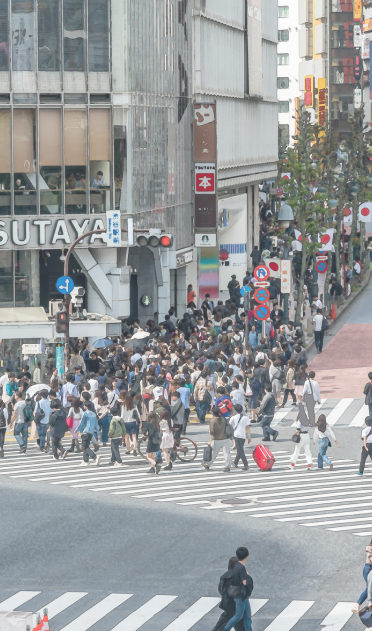
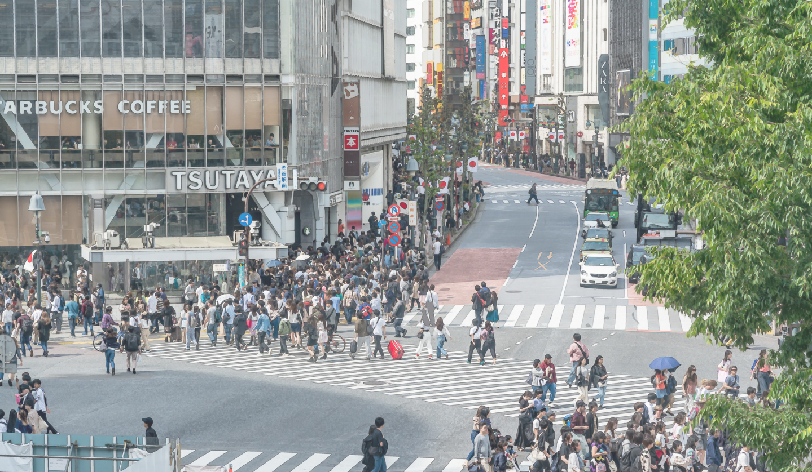

<!DOCTYPE html>
<html lang="ja">
<head prefix="og: https://www.guardians.city/ fb: https://www.guardians.city/ website: https://www.guardians.city/">
  <meta charset="UTF-8">
  <meta name="viewport" content="width=device-width, initial-scale=1.0">
  <meta property="og:url" content="https://www.guardians.city/" />
  <meta property="og:type" content="website" />
  <meta property="og:title" content="マンホール聖戦in渋谷" />
  <meta property="og:description" content="立ち向かえインフラ・クライシス！我らのマンホールを守りきれ！" />
  <meta property="og:site_name" content="マンホール聖戦in渋谷" />
  <meta property="og:image" content="https://guardians.city/asset/img/ogpimages.png" />
  <meta name="twitter:card" content="Summary" />
  <meta name="twitter:site" content="@Guardians__City" />
  <link rel="stylesheet" href="./asset/CSS/reset.css">
  <link rel="stylesheet" href="./asset/CSS/base.css">
  <link rel="stylesheet" href="./asset/CSS/index.css">
  <link rel="preconnect" href="https://fonts.googleapis.com"> 
  <link rel="preconnect" href="https://fonts.gstatic.com" crossorigin> 
  <link href="https://fonts.googleapis.com/css2?family=Montserrat:ital,wght@0,400;0,700;0,800;1,300&display=swap" rel="stylesheet">


  <!-- Global site tag (gtag.js) - Google Analytics -->
  <script async src="https://www.googletagmanager.com/gtag/js?id=G-01GQ32Z1C2"></script>
  <script>
    window.dataLayer = window.dataLayer || [];
    function gtag(){dataLayer.push(arguments);}
    gtag('js', new Date());

    gtag('config', 'G-01GQ32Z1C2');
  </script>

  <title>マンホール聖戦in渋谷</title>
</head>
<body>
  <header>
    <div class="header-container">
      <div class="header-container_logo">
        
      </div>
      <div class="sp-header-nav">
        <div class="sp-header-nav_box" id="js-nav-box">
          <div class="sp-header-nav_box_ham" id="js-ham"> 
            <span class="sp-header-nav_box_ham_line line-1"></span>
            <span class="sp-header-nav_box_ham_line line-2"></span>
            <span class="sp-header-nav_box_ham_line line-3"></span>
          </div>
          <div class="pc-nav-list">
            <nav>
              <ul class="pc-nav-list_box">
                <li class="pc-nav-list_box_list"><a href="#a-about">概要</a></li>
                <li class="pc-nav-list_box_list"><a href="#a-mission">ミッション</a></li>
                <li class="pc-nav-list_box_list"><a href="#a-join">参加方法</a></li>
                <li class="pc-nav-list_box_list"><a href="#a-what">鉄コンとは</a></li>
              </ul>
            </nav>
          </div>
        </div> 
        <div class="sp-nav_nav-list" id="js-sp-nav">
          <nav>
            <ul class="sp-nav_nav-list_box" id="js-nav-scroll">
              <li class="sp-nav_nav-list_box_list nav-text2"><a href="#a-about">概要<span class="nav-text1">ABOUT</span></a></li>
              <li class="sp-nav_nav-list_box_list nav-text2"><a href="#a-mission">ミッション<span class="nav-text1">MISSION</span></li>
              <li class="sp-nav_nav-list_box_list nav-text2"><a href="#a-join">参加方法<span class="nav-text1">HOW TO JOIN</span></a></li>
              <li class="sp-nav_nav-list_box_list nav-text2"><a href="#a-what">鉄コンとは<span class="nav-text1">WHAT IS TETSUCON</span></a></li>
            </ul>
          </nav>
        </div>
      </div>
    </div>
  </header>
  <!-- header -->
  <main>
    <section class="kv-box">
      <div class="kv-box_img-box">
        
        <!--  -->
        <video src="./asset/img/kv_video_pc.mp4" class="kv-box_img-box_pc" loop autoplay muted playsinline></video>
      </div>
      <div class="kv-box_heading-box">
        <p class="kv-box_heading-box_name text1">2021.9.19よりリリース</p>
        <!-- <p class="kv-box_heading-box_text text2">渋谷区観光協会後援</p> -->
        <h1 class="kv-box_heading-box_heading heading1">第２回マンホール聖戦<span class="heading-small"></span></h1>
      </div>
      <div class="kv-box_fv-btn">
        <a href="#a-about"></a>
      </div>
      <div class="kv-box_tag">
        <p  class="kv-box_tag_text text3">立ち向かえインフラ・クライシス！<br class="pc-none">我らの<span class="text4">マンホール</span>を守りきれ！</p>
        <div  class="kv-box_tag_img"></div>
      </div>
    </section>
    <!-- kv-box -->
    <section class="about-box" id="a-about">
      <div class="about-box_text-box">
        <h2 class="about-box_text-box_heading heading2">ABOUT</h2>
        <p class="about-box_text-box_h-sub h-sub">第２回マンホール聖戦</p>
        <p class="about-box_text-box_text">マンホールコレクションゲームアプリ「鉄とコンクリートの守り人」の２回目の実証実験、<br class="pc-none">
          「第２回マンホール聖戦」を開催します！<br class="pc-none"><br>
          9月19日から、前回の渋谷区に加え、新宿区・中野区・港区のマンホールの一⻫調査を行います。<br>
          プレイ時間は7:00 - 19:00までとなります。<br>
          <br><br>
          ※賞品・賞金等はございません。<br class="pc-none">
        </p>
      </div>
    </section>
    <!-- about -->
    <section class="mission-box" id="a-mission">
      <h2 class="mission-box_heading heading2">MISSION</h2>
      <p class="mission-box_h-sub h-sub">ミッション</p>
      <p  class="mission-box_y-text mission-box_y-text1  text2" >東京（渋谷・新宿・中野・港）の</p>
      <p class="mission-box_y-text mission-box_y-text2  text2">マンホール守りきれ！</p>
      <div class="mission-box_text-box">
        <p class="mission-box_text-box_text text5">迫り来るインフラ・クライシス。公共インフラの深刻な老朽化。<br class="pc-none"><br class="pc-none">
          我々の足元にあるマンホールも日々老朽化しているインフラの一つです。ひび割れや破損しているマンホールが足元にあるかもしれない危険な状態です。<br><br>
          そんなマンホール、社会を救えるのは我々一般人一人一人です。現状のマンホールの状態を調査し把握しておくことで、今後の重大事故を劇的に減らすことができます。<br><br>
          今マンホールの「守り人」となり、日本の中心地渋谷を救う救世主となりえるか！？
        </p>
      </div>
    </section>

    <!-- prizes -->
    <section class="join-box" id="a-join">
      <h2 class="join-box_heading heading2">HOW TO JOIN</h2>
      <p class="join-box_h-sub h-sub">参加方法</p>
      <ul class="join-box_contents-box">
        <li class="join-box_contents-box_contents">
          <div class="join-box_contents-box_contents_step">
            <span class="text12">STEP</span>
            <p class="join-box_contents-box_contents_step_number text11">01</p>
          </div>
          <div class="join-box_contents-box_contents_img"></div>
          <div class="join-box_contents-box_contents_text-box">
            <h3 class="join-box_contents-box_contents_text-box_heading text13">公式LINEに登録&詳細確認</h3>
            <p class="join-box_contents-box_contents_text-box_text text5">まずは公式LINEに登録して、<br>ゲームの案内を待とう！</p>
          </div>
        </li>
        <!-- li -->
        <li class="join-box_contents-box_contents">
          <div class="join-box_contents-box_contents_step">
            <span class="text12">STEP</span>
            <p class="join-box_contents-box_contents_step_number text11">02</p>
          </div>
          <div class="join-box_contents-box_contents_img"></div>
          <div class="join-box_contents-box_contents_text-box">
            <h3 class="join-box_contents-box_contents_text-box_heading text13">ゲームに登録</h3>
            <p class="join-box_contents-box_contents_text-box_text text5">LINEにて案内を送る<br>WEBアプリにご登録！</p>
          </div>
        </li>
        <!-- li -->
        <li class="join-box_contents-box_contents">
          <div class="join-box_contents-box_contents_step">
            <span class="text12">STEP</span>
            <p class="join-box_contents-box_contents_step_number text11">03</p>
          </div>
          <div class="join-box_contents-box_contents_img"></div>
          <div class="join-box_contents-box_contents_text-box">
            <h3 class="join-box_contents-box_contents_text-box_heading text13">イベントに参加</h3>
            <p class="join-box_contents-box_contents_text-box_text text5">9/19から都内4区内にて<br>マンホール聖戦の開戦！</p>
          </div>
        </li>
        <!-- li -->
      </ul>
    </section>
    <!-- join -->
    <section class="rules-box" id="a-rules">
      <h2 class="rules-box_heading heading2">RULES</h2>
      <p class="rules-box_h-sub h-sub">参加要項・規約</p>
      
      <div class="rules-box_text-box">
        プレイ時間は7:00 - 19:00までとする。<br><br>
        <h3 class="rules-box_text-box_heading text6">投稿ルール</h3>
        <p class="rules-box_text-box_text text14">・マンホール写真は、「周囲の確認写真」と「マンホール本体写真」の2つをセットにする。<br>
          ・確認写真は、マンホールとまわりがわかるような角度をつけた写真。それを投稿してから本体写真を撮影する。<br>
          ・周囲の確認写真を投稿したあと「この場所は安全に徒歩でアクセスできますか? 」という質問を表示し、OK を押すと、<br>
          　本体写真の撮影に進むことができる。<br>
          ・「いいえ」を押しても本体写真と同等のGPを得られる。<br>
        </p>
        <h3 class="rules-box_text-box_heading  text6"> 利用規約</h3>
        <p class="rules-box_text-box_text text14">・ 17歳以上の方が対象となります。<br>
          ・ 参加には事前にWEBアプリの登録が必要となります。（公式LINEにて詳細はご案内いたします。)<br><br>
        </p>
        <!-- pc-text -->
        <div class="rules-box_text-box_pc-text" id="js-rules-text">
          <h3 class="rules-box_text-box_heading  text6">運営/開発会社</h3>
          <p class="rules-box_text-box_text text14">
            ・Whole Earth Foundation<br>
            ・日本鋳鉄菅株式会社<br><br>
          </p>
        </div>
         <!-- pc-text -->
         <div class="rules-box_text-box_sp-link">
           <p class="text14 rulesbtn">もっと見る</p>
         </div>
         <!-- sp-link -->
      </div>
    </section>
    <!-- rules -->
    <!-- what -->
    <section class="what-box" id="a-what">
      <div class="what-box_text-box">
        <h2 class="what-box_text-box_heading heading4"><span class="text4"> WHAT IS...</span><br>鉄とコンクリートの守り人</h2>
        <div class="what-box_text-box_img"></div>
        <p class="what-box_text-box_text text5">「鉄とコンクリートの守り人」とは日本にあるすべてのマンホール蓋を守り人（プレイヤー）が力をあわせて撮影・投稿し、その実績を称えあえるアプリです。<br><br>
          陣取り合戦のゲーム性を取り入れ、マンホール蓋の最初の投稿者が守り人として登録されます。<br>
          獲得GPによりレベルがアップし、タスクをこなしていくとバッジが獲得できます。
        </p>
      </div>
    </section>
    <!-- what -->
    <section class="story-box" id="a-what"> 
      <div class="story-box_text-box">
        <h2 class="story-box_text-box_heading heading2">STORY</h2>
        <p class="story-box_text-box_h-sub h-sub">本ゲームが誕生したきっかけ</p>
        <p class="story-box_text-box_text text15">いつもあなたの近くで、あなたの<br class="pc-none"> 
          社会生活を支えてくれているインフラ、<br class="pc-none"> 
          この老朽化が深刻に進んでいます。<br>
          老朽インフラの崩壊は時間の問題であり、我々の生活に直接的被害をもたらします。<br><br>

          社会インフラの多くは自治体の予算（料金収入）のもと、整備・管理・維持されています。<br>
          経済成長が停滞し、少子高齢化が進み、人口も減少し始めた日本における<br class="pc-none"> 
          インフラ維持はかなり深刻な状態です。<br><br>
          
          老朽化に対する最も有効な対策は更新投資ですが、料金収入が下がり予算が限られる中で、<br>
          どこから更新したら良いか<br class="pc-none"> 
          わからないというのが現状です。<br><br>
          
          しかし、一般人の気配りにより<br class="pc-none"> 
          インフラ異常を事前に察知できれば、<br>
          更新優先順位がわかり、<br class="pc-none"> 
          重大事故を未然に防ぐことができます。<br><br>
          
          そこでWEFは一般人でも気軽にインフラの状態を投稿できるアプリを開発しました。<br>
          今ここで我々のアプリを片手に一般人が<br class="pc-none"> 
          立ち上がることを熱望します。
        </p>
      </div>
    </section>
    <!-- story -->
    <section class="play-box" id="a-play">
      <h2 class="play-box_heading heading2">HOW TO PLAY</h2>
      <p class="play-box_h-sub h-sub">本ゲームの遊び方</p>
      <ul class="play-box_contents-box">
        <li class="play-box_contents-box_list">
          <div class="play-box_contents-box_list_heading-box">
            <div class="play-box_contents-box_list_heading-box_img"></div>
            <h3 class="play-box_contents-box_list_heading-box_heading text16">基本的な動き</h3>
          </div>
          <div class="play-box_contents-box_list_text-box">
            <p class="play-box_contents-box_list_text-box_text text14">マンホールの位置が描かれている地図を見て、撮りたいマンホールの位置を確認後、ターゲットマンホールのまで動き、マンホール蓋の写真を上部から撮影し投稿する。
            </p>
          </div>
        </li>
        <!-- li -->
        <li class="play-box_contents-box_list">
          <div class="play-box_contents-box_list_heading-box">
            <div class="play-box_contents-box_list_heading-box_img"></div>
            <h3 class="play-box_contents-box_list_heading-box_heading text16">ポイント制度</h3>
          </div>
          <div class="play-box_contents-box_list_text-box">
            <p class="play-box_contents-box_list_text-box_text text14">マンホール写真を投稿し、GP（Gardian Point）を獲得していく。このGPでランキングが付けられます。また、マンホールごとに獲得GPが異なるので要注意。（ポイント地図は後ほど公開）
            </p>
          </div>
        </li>
        <!-- li -->
        <li class="play-box_contents-box_list">
          <div class="play-box_contents-box_list_heading-box">
            <div class="play-box_contents-box_list_heading-box_img"></div>
            <h3 class="play-box_contents-box_list_heading-box_heading text16">予約制度　　</h3>
          </div>
          <div class="play-box_contents-box_list_text-box">
            <p class="play-box_contents-box_list_text-box_text text14">行きたいマンホールを事前に予約することが可能です。GPを消費して、予約すれば予約期間中はその他の守り人は写真を投稿することはできません。予約期間を過ぎると、予約は解除され、その他の守り人が投稿できるようになってしまうので注意。どのようなルートを辿ればGPを多く、獲得できるかをシミュレーションし、戦略を練ってください。
            </p>
          </div>
        </li>
        <!-- li -->
      </ul>
    </section>
    <!-- play-->
    <section class="cv-box">
      <div class="cv-box_heading-box">
        <h4 class="cv-box_heading-box_heading text17">さあ、マンホール聖戦に参加して<br>東京のマンホールを守ろう</h4>
      </div>
      <div class="cv-box_link-btn">
        <a href="https://lin.ee/Q4YrTZd">
          <div class="cv-box_link-btn_flex">
            
            <span class="cv-box_link-btn_flex_text text18">参加する</span>
          </div>
        </a>
      </div>
    </section>
    <!-- cv -->
    <!-- scroll-btn -->
    <div id="js-scroll-fadein" class="float-btn">
      <a href="https://lin.ee/Q4YrTZd"></a>
    </div>
     <!-- scroll-btn -->
  </main>
  <footer class="footer-box">
    <div class="footer-box_flex">
      <nav class="footer-box_nav">
        <ul class="footer-box_nav_list-box">
          <li class="footer-box_nav_list-box_list">
            <a href="https://ja.wholeearthfoundation.org/" class="footer-box_nav_list-box_list_text footer-nav">運営団体</a>
          </li>
          <!-- li -->
          <li class="footer-box_nav_list-box_list">
            <a href="https://ja.wholeearthfoundation.org/terms-of-use" class="footer-box_nav_list-box_list_text footer-nav">利用規約</a>
          </li>
          <!-- li -->
          <li class="footer-box_nav_list-box_list">
            <a href="https://ja.wholeearthfoundation.org/privacy-policy" class="footer-box_nav_list-box_list_text footer-nav">プライバシーポリシー</a>
          </li>
          <!-- li -->
        </ul>
      </nav>
      <div class="footer-box_img-box">
        <div class="footer-box_img-box_left"><a href="https://twitter.com/Guardians__City"></a></div>
        <div class="footer-box_img-box_right"><a href="https://www.instagram.com/guardians__city/"></a></div>
      </div>
    </div>
    <div class="footer-box_copy">
      <small class="footer-box_copy_text footer-copy">©2021 Whole Earth Foundation</small>
    </div>
  </footer>
  <script type="text/javascript" src=".//asset/JS/index.js"></script>
  <noscript>javascriptが利用出来ません</noscript>
</body>
</html>